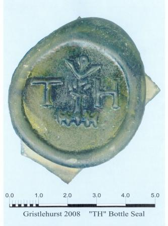
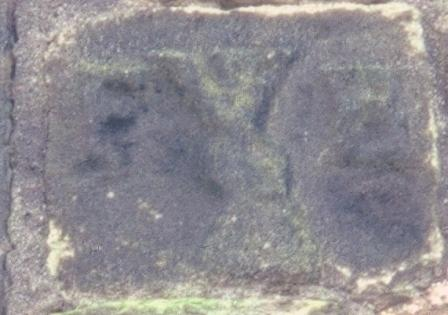
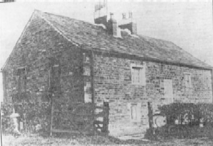
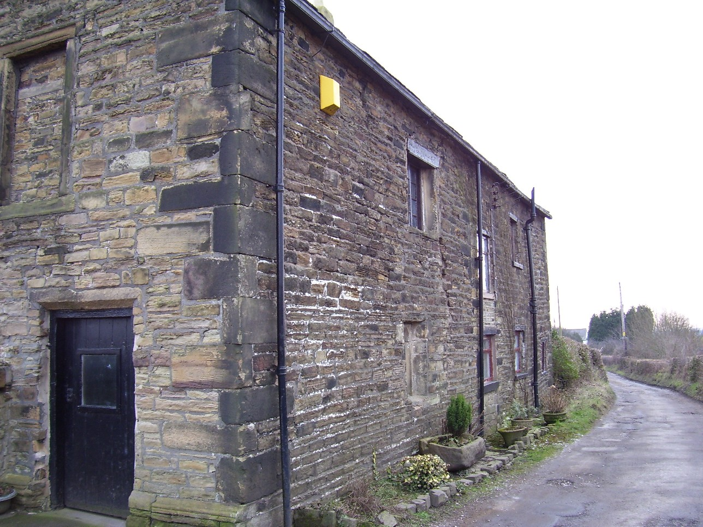
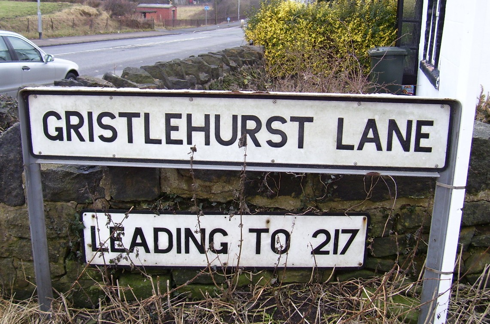
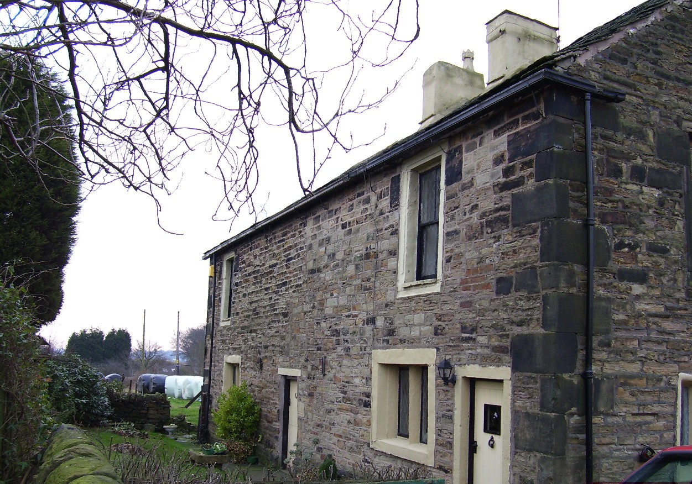
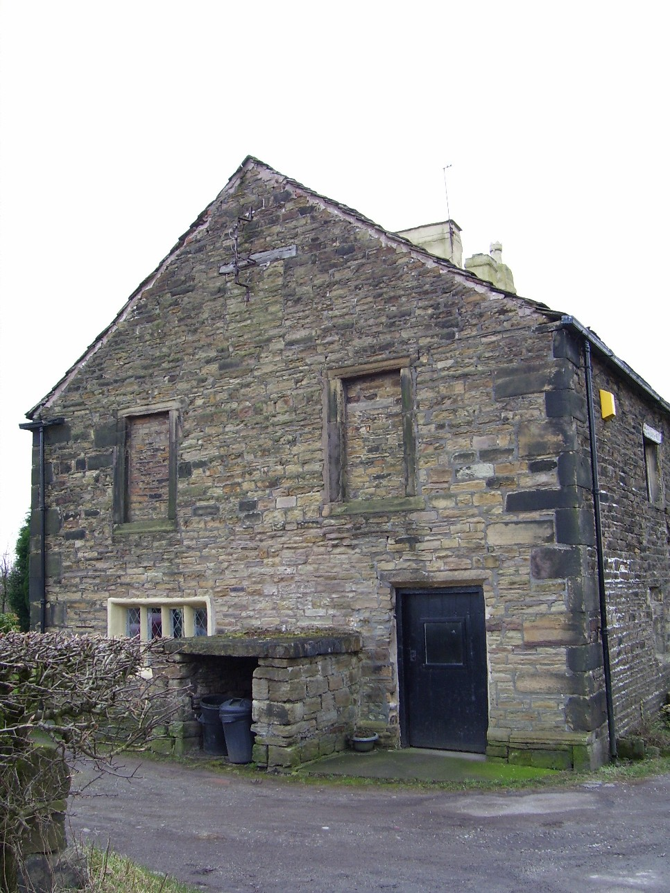
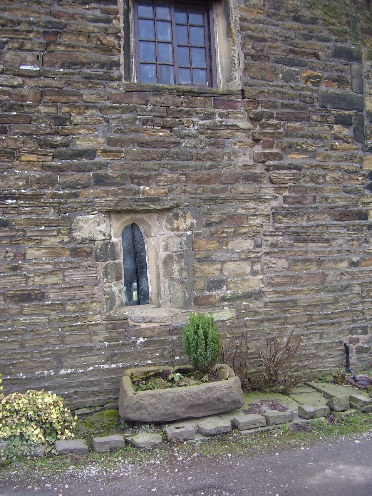

Gristlehurst Hall
Francis Holt of Gristlehurst was High Sheriff of Lancashire in 1575. The Holts of Gristlehurst married well, which gave them a position and rank not enjoyed by the elder branches of the house. The estate was held by heirs and was squandered away by Thomas Posthumous Holt by 1679.
To read more about the Holts of Gristlehurst, click here for a chapter of local family history. A letter with details of the ancestry of Chief-Justice Holt is interesting to read.
Articles from the Bury Times look at the archaeological dig to find Gristlehurst Hall. A new archaeological dig took place in 2008 by the Bury Archaeological Group. The excavations revealed the foundations of a stone and timber building ancillary to the hall, dating from the early 16th century, possibly built by Sir Thomas Holt when he replaced the medieval house. The dig found a wine bottle seal from a mid‑17th‑century context. It bears a stylised Holt of Gristlehurst crest—a hand holding an inverted pikeon—and the initials T.H., which are taken to refer to Thomas “Posthumous” Holt, who died virtually intestate near Tattenhall in Cheshire in 1679.

Photo taken by Bury Archaeological Group
A re-used stone is built into the north gable of the present farmhouse. The initials F.H. probably belong to Francis Holt, who died in 1604.

On the site of the original Gristlehurst Hall stands the building shown below.
It stands on the western edge of Simpson Clough. Until the end of the 16th century, the mansion of Gristlehurst rested in seclusion.
Ralph Holt obtained the estate by marriage in 1449. The hall was a large half‑timbered house with 13 hearths. The high fireplaces had chimney beams carved with armorial crests. Now hardly any evidence remains at Gristlehurst Farm. The house had gable ends and long casements (hinged windows). Gristlehurst had 127 acres of pasture (if calculated as a customary acre, which in Lancashire amounted to about 250 statute acres) and 42 acres of timber.





